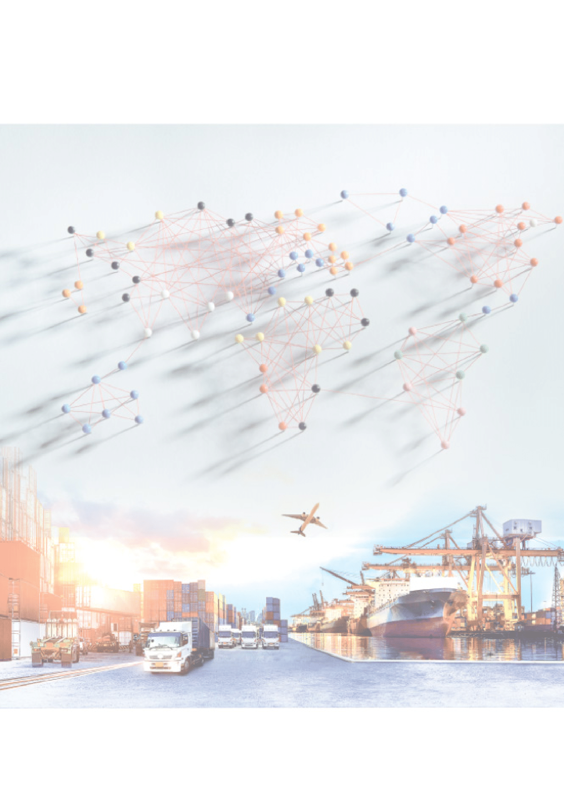
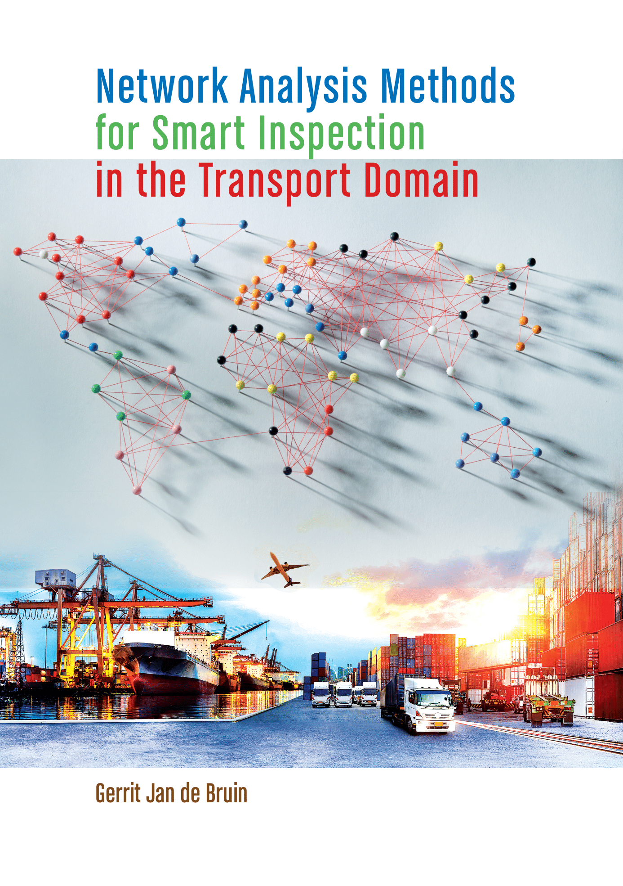
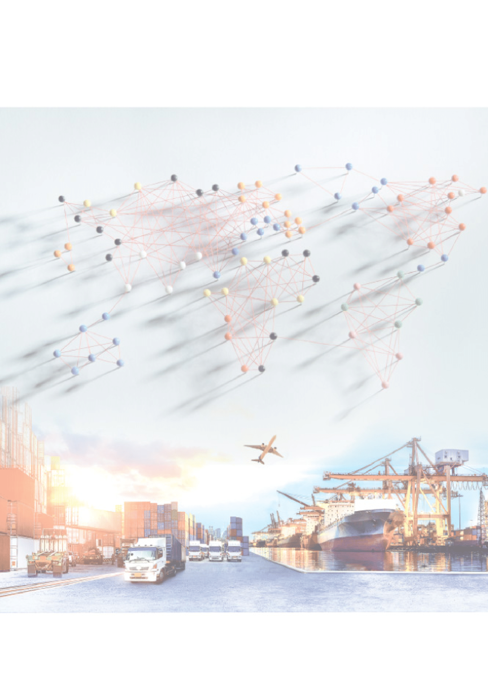
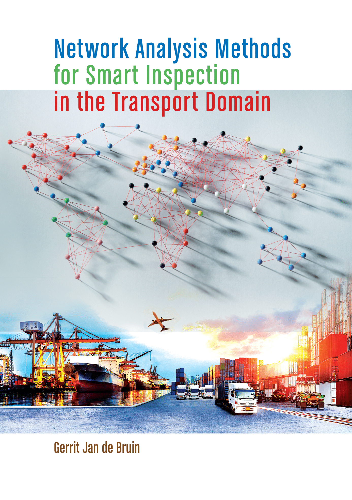

Network analysis
Network analysis can be used to arrive at
The research was carried out together with the Human Environment and Transport Inspectorate and the Dutch Ministry of Infrastructure and Water Management.
 Network analysis can be used to arrive at
The research was carried out together with the Human Environment and Transport Inspectorate and the Dutch Ministry of Infrastructure and Water Management.
 